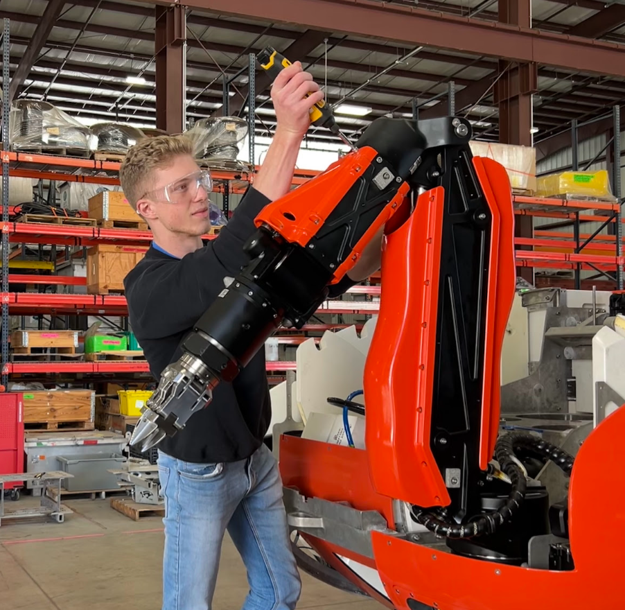

Preparing for Trials
Swapping out mission-critical parts on the vehicle and arm to prepare for deep-sea trials. Due to strict delivery deadlines, I worked overtime on-site to ensure the vehicle passed pressure tests and was fully mission-ready.